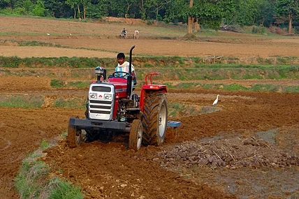
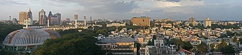
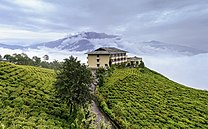

Economy
According to the International Monetary Fund (IMF), the Indian economy in 2020 was nominally worth $2.7 trillion; it is the sixth-largest economy by market exchange rates, and is around $8.9 trillion, the third-largest by purchasing power parity (PPP). With its average annual GDP growth rate of 5.8% over the past two decades, and reaching 6.1% during 2011–2012, India is one of the world's fastest-growing economies. However, the country ranks 139th in the world in nominal GDP per capita and 118th in GDP per capita at PPP. Until 1991, all Indian governments followed protectionist policies that were influenced by socialist economics. Widespread state intervention and regulation largely walled the economy off from the outside world. An acute balance of payments crisis in 1991 forced the nation to liberalise its economy; since then it has moved slowly towards a free-market system by emphasising both foreign trade and direct investment inflows. India has been a member of WTO since 1 January 1995.

The 522-million-worker Indian labour force is the world's second-largest, as of 2017. The service sector makes up 55.6% of GDP, the industrial sector 26.3% and the agricultural sector 18.1%. India's foreign exchange remittances of US$70 billion in 2014, the largest in the world, were contributed to its economy by 25 million Indians working in foreign countries. Major agricultural products include: rice, wheat, oilseed, cotton, jute, tea, sugarcane, and potatoes. Major industries include: textiles, telecommunications, chemicals, pharmaceuticals, biotechnology, food processing, steel, transport equipment, cement, mining, petroleum, machinery, and software. In 2006, the share of external trade in India's GDP stood at 24%, up from 6% in 1985. In 2008, India's share of world trade was 1.68%; In 2011, India was the world's tenth-largest importer and the nineteenth-largest exporter. Major exports include: petroleum products, textile goods, jewellery, software, engineering goods, chemicals, and manufactured leather goods. Major imports include: crude oil, machinery, gems, fertiliser, and chemicals. Between 2001 and 2011, the contribution of petrochemical and engineering goods to total exports grew from 14% to 42%. India was the world's second largest textile exporter after China in the 2013 calendar year.

Averaging an economic growth rate of 7.5% for several years prior to 2007, India has more than doubled its hourly wage rates during the first decade of the 21st century. Some 431 million Indians have left poverty since 1985; India's middle classes are projected to number around 580 million by 2030. Though ranking 51st in global competitiveness, as of 2010, India ranks 17th in financial market sophistication, 24th in the banking sector, 44th in business sophistication, and 39th in innovation, ahead of several advanced economies. With seven of the world's top 15 information technology outsourcing companies based in India, as of 2009, the country is viewed as the second-most favourable outsourcing destination after the United States. India was ranked 48th in the Global Innovation Index in 2020, it has increased its ranking considerably since 2015, where it was 81st. India's consumer market, the world's eleventh-largest, is expected to become fifth-largest by 2030.
Driven by growth, India's nominal GDP per capita increased steadily from US$329 in 1991, when economic liberalisation began, to US$1,265 in 2010, to an estimated US$1,723 in 2016. It is expected to grow to US$2,191 by 2021. However, it has remained lower than those of other Asian developing countries such as Indonesia, Malaysia, Philippines, Sri Lanka, and Thailand, and is expected to remain so in the near future.

According to a 2011 PricewaterhouseCoopers (PwC) report, India's GDP at purchasing power parity could overtake that of the United States by 2045. During the next four decades, Indian GDP is expected to grow at an annualised average of 8%, making it potentially the world's fastest-growing major economy until 2050. The report highlights key growth factors: a young and rapidly growing working-age population; growth in the manufacturing sector because of rising education and engineering skill levels; and sustained growth of the consumer market driven by a rapidly growing middle-class. The World Bank cautions that, for India to achieve its economic potential, it must continue to focus on public sector reform, transport infrastructure, agricultural and rural development, removal of labour regulations, education, energy security, and public health and nutrition.
According to the Worldwide Cost of Living Report 2017 released by the Economist Intelligence Unit (EIU) which was created by comparing more than 400 individual prices across 160 products and services, four of the cheapest cities were in India: Bangalore (3rd), Mumbai (5th), Chennai (5th) and New Delhi (8th).
___Industries___
India's telecommunication industry is the second-largest in the world with over 1.2 billion subscribers. It contributes 6.5% to India's GDP. After the third quarter of 2017, India surpassed the US to become the second largest smartphone market in the world after China.

The Indian automotive industry, the world's second-fastest growing, increased domestic sales by 26% during 2009–2010, and exports by 36% during 2008–2009. At the end of 2011, the Indian IT industry employed 2.8 million professionals, generated revenues close to US$100 billion equalling 7.5% of Indian GDP, and contributed 26% of India's merchandise exports.
The pharmaceutical industry in India is among the significant emerging markets for the global pharmaceutical industry. The Indian pharmaceutical market is expected to reach $48.5 billion by 2020. India's R & D spending constitutes 60% of the biopharmaceutical industry. India is among the top 12 biotech destinations in the world. The Indian biotech industry grew by 15.1% in 2012–2013, increasing its revenues from ₹204.4 billion (Indian rupees) to ₹235.24 billion (US$3.94 billion at June 2013 exchange rates).
___Energy___
India's capacity to generate electrical power is 300 gigawatts, of which 42 gigawatts is renewable. The country's usage of coal is a major cause of greenhouse gas emissions by India but its renewable energy is competing strongly. India emits about 7% of global greenhouse gas emissions. This equates to about 2.5 tons of carbon dioxide per person per year, which is half the world average. Increasing access to electricity and clean cooking with liquefied petroleum gas have been priorities for energy in India
___Socio-economic challenges___
Despite economic growth during recent decades, India continues to face socio-economic challenges. In 2006, India contained the largest number of people living below the World Bank's international poverty line of US$1.25 per day. The proportion decreased from 60% in 1981 to 42% in 2005. Under the World Bank's later revised poverty line, it was 21% in 2011. 30.7% of India's children under the age of five are underweight. According to a Food and Agriculture Organization report in 2015, 15% of the population is undernourished. The Mid-Day Meal Scheme attempts to lower these rates.
According to a 2016 Walk Free Foundation report there were an estimated 18.3 million people in India, or 1.4% of the population, living in the forms of modern slavery, such as bonded labour, child labour, human trafficking, and forced begging, among others. According to the 2011 census, there were 10.1 million child labourers in the country, a decline of 2.6 million from 12.6 million in 2001.
Since 1991, economic inequality between India's states has consistently grown: the per-capita net state domestic product of the richest states in 2007 was 3.2 times that of the poorest. Corruption in India is perceived to have decreased. According to the Corruption Perceptions Index, India ranked 78th out of 180 countries in 2018 with a score of 41 out of 100, an improvement from 85th in 2014.
For previous page
click here